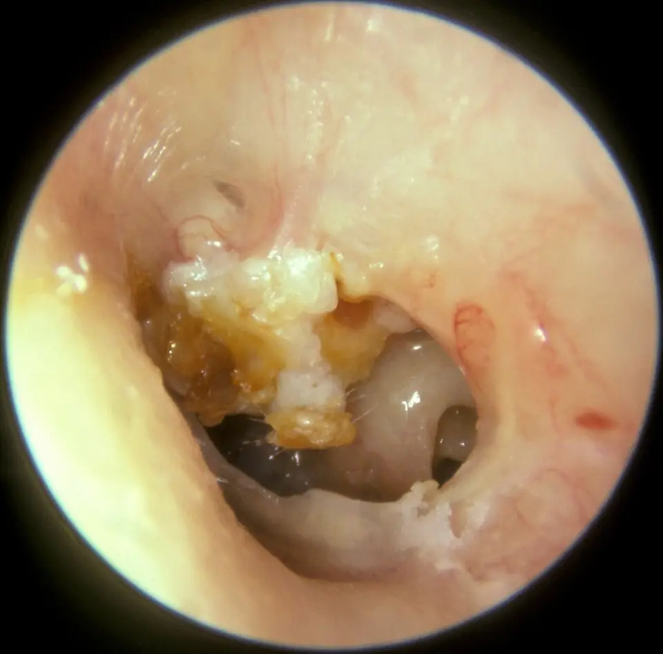

DX.9 — Cholestéatome 🚩
Le cholestéatome accumule dans l’oreille moyenne un épiderme qui s’infecte et détruit les osselets, puis peut atteindre le labyrinthe, le nerf facial ou l’encéphaleS2S4. Le médecin de premier recours l’évoque devant une otorrhée chronique, adresse le patient à l’oto-rhino-laryngologiste (ORL), qui opère puis surveille la récidiveS1S3.
1. Définition
Selon l’European Academy of Otology and Neurotology (EAONO) et la Japanese Otological Society (JOS), le cholestéatome est une masse d’épithélium kératinisant de la caisse ou de la mastoïdeS4. Cette masse comprend en outre un tissu conjonctif sous-épithélial et des débris de kératine qui s’accumulent progressivement, avec ou sans réaction inflammatoireS4.
2. Épidémiologie (Suisse, puis Europe)
L’Hôpital universitaire de Zurich (USZ) indique qu’environ neuf personnes sur 100 000 reçoivent chaque année ce diagnostic, surtout entre 5 et 15 ansS2. En outre, une série danoise d’Aarhus mesure une incidence comparable, de 6,8 cas pour 100 000 habitants par anS8. Les chiffres suisses et européens et la tendance chez l’enfant situent ce diagnostic rare, mais grave.
Chiffres utiles : incidence, âge, récidive
| Donnée | Valeur | Population et année | Source |
|---|---|---|---|
| Incidence annuelle | Environ 9 pour 100 000 | Zurich, page de l’USZ | S2 |
| Âge le plus touché | Entre 5 et 15 ans | Zurich | S2 |
| Incidence annuelle | 6,8 pour 100 000 | District d’Aarhus, Danemark, 147 patients opérés | S8 |
| Récidive cumulée à 10 ans | 0,44 (intervalle de confiance à 95 % : 0,37 à 0,53) | Aarhus, chirurgie surtout à paroi conservée | S8 |
| Incidence chirurgicale chez l’enfant danois | De 8 à 15, puis 10 pour 100 000 personnes-années | Danemark, 1977 à 2010 | S9 |
| Pic d’âge chez l’enfant | Vers 9 ans | Danemark | S9 |
| Proportion cumulée à 16 ans | 0,16 % | Danemark, taux de 2010 | S9 |
Ces chiffres européens confirment la rareté du cholestéatome, qui occupe le rang 8 de fréquence dans la Phase A, mais le rang E3 d’exclusionS2S8.
Tendance danoise chez l’enfant et hypothèse des aérateurs
| Période | Incidence standardisée | Variation annuelle | Source |
|---|---|---|---|
| 1977 à 2002 | De 8 à 15 pour 100 000 personnes-années | Hausse de 1,8 % par an | S9 |
| 2002 à 2010 | De 15 à 10 pour 100 000 personnes-années | Baisse de 5,4 % par an | S9 |
Les auteurs danois notent que la baisse a suivi une forte hausse de la pose d’aérateurs transtympaniques, mais ils demandent d’autres études avant d’y voir une causeS9. La revue française rappelle par ailleurs que l’aérateur se discute chez l’enfant dont la poche de rétraction évolue viteS5.
3. Physiopathologie
Le cholestéatome acquis naît le plus souvent d’une poche de rétraction, lorsque la trompe auditive bouchée crée une dépression dans l’oreille moyenneS2. La poche perd sa capacité d’autonettoyage, accumule la kératine, s’infecte et érode progressivement l’os et les osseletsS4S5. La base anatomique, la classification et la corrélation clinique relient l’érosion osseuse aux complications et à l’indication opératoire.
Base à connaître : la caisse, l’attique et les structures menacées
Oreille moyenne et ses voisins. Ce schéma en couleurs de Blausen Medical situe le tympan, les osselets, la trompe auditive, les canaux semi-circulaires et la cochléeS14.

Le lecteur repère d’abord seul les structures que le cholestéatome peut détruire, puis il ouvre la copie annotée.
- 1. Le tympan porte la poche de rétraction ; sa partie haute, la pars flaccida, donne le cholestéatome atticalS14S5.
- 2. Les osselets proches de la poche subissent l’érosion, ce qui crée la surdité de transmissionS14S2.
- 3. La trompe auditive mal ventilée entretient la dépression qui creuse la pocheS14S2.
- 4. Les canaux semi-circulaires peuvent s’ouvrir : la fistule labyrinthique classe le cholestéatome au stade IIIS14S4.
- 5. La cochlée reste menacée par la labyrinthite, qui ajoute alors une surdité de perceptionS14S4.
Le schéma ne représente ni la mastoïde ni le canal facial, que le scanner des rochers explore pourtant avant toute chirurgieS14S6.
Classification européenne et japonaise du consensus EAONO/JOS
| Catégorie | Sous-type | Mécanisme | Source |
|---|---|---|---|
| Congénital | — | Masse kystique derrière un tympan intact, souvent dans le quadrant antéro-supérieur, sans otorrhée ni perforation antérieure | S4 |
| Acquis par poche de rétraction | Pars flaccida (attique), pars tensa, ou les deux | Poche qui perd son autonettoyage et accumule la kératine | S4 |
| Acquis sans poche de rétraction | Secondaire à une perforation | Peau qui migre par le trou du tympan | S4S2 |
| Acquis sans poche de rétraction | Après traumatisme ou chirurgie otologique | Épiderme déplacé | S4 |
| Inclassable | — | Origine impossible à préciser | S4 |
| Post-chirurgical résiduel | — | Matrice incomplètement retirée | S4 |
| Post-chirurgical récurrent | — | Nouvelle poche après exérèse complète | S4 |
Le consensus a reçu 98 % d’approbation pour la classification et 89 % pour les définitions, lors de la conférence d’Édimbourg de 2016S4. Une otite moyenne antérieure ou un épanchement n’excluent pas le cholestéatome congénital, ce qui surprend souvent les étudiantsS4.
Corrélation : mécanisme, signe, examen, décision
| Mécanisme | Signe | Examen | Décision |
|---|---|---|---|
| Kératine infectée | Otorrhée fétide chronique | Otoscopie au microscope après aspiration | Avis ORLS2S1 |
| Érosion ossiculaire | Surdité de transmission | Diapason, audiogramme, scanner | Chirurgie avec reconstructionS2S1 |
| Fistule du canal semi-circulaire | Vertige | Scanner des rochers | Stade III : chirurgie rapideS4S1 |
| Atteinte du canal facial | Paralysie faciale | Scanner, avis immédiat | Stade III : urgence otologiqueS4S2 |
| Extension intracrânienne | Céphalées sévères, raideur de nuque | Imagerie cérébrale en urgence | Stade IV : prise en charge hospitalièreS4S2 |
L’USZ décrit des proliférations en pelures d’oignon, bénignes et sans lien avec le cancer, qui restent pourtant destructrices par leur croissance localeS2. Les bactéries s’y multiplient particulièrement bien, ce qui entretient l’otite chronique et explique l’échec des seules gouttesS2. Le cholestéatome congénital reste très rare, car il provient de restes de cellules cutanées laissés dans l’oreille moyenne pendant la vie embryonnaireS2.
4. Démarche diagnostique
Le médecin de premier recours suspecte le cholestéatome devant une otorrhée chronique, une surdité unilatérale ou un tympan anormal, puis il adresse le patient à l’oto-rhino-laryngologiste (ORL)S1S5. L’ORL confirme au microscope, mesure l’audition, puis demande un scanner des rochers qui fixe l’extension avant la chirurgieS2. Trois fenêtres détaillent ensuite le parcours : la démarche en étapes, le tableau comparatif et les pièges du parcours.
Démarche en six étapes, de la suspicion au suivi
| Étape | Acteur | Geste | Seuil ou critère | Conduite | Source |
|---|---|---|---|---|---|
| 1. Suspecter | Médecin de premier recours | Anamnèse de l’otorrhée et de la surdité | Écoulement chronique, intolérance à l’eau | Otoscopie | S1 |
| 2. Trier l’urgence | Médecin de premier recours | Rechercher céphalées, raideur, paralysie faciale, vertige | Un seul de ces signes | Avis ORL immédiat | S2 |
| 3. Voir le tympan | Médecin de premier recours | Otoscopie | Poche marginale, coulée épidermique, fond invisible | Expertise otologique | S5 |
| 4. Confirmer | ORL | Microscope après aspiration | Croûte blanc jaunâtre de kératine | Audiométrie et tests vestibulaires | S2 |
| 5. Étendre | ORL | Scanner des rochers, imagerie par résonance magnétique (IRM) si besoin | Siège, osselets, complications | Stade EAONO/JOS | S2S4 |
| 6. Traiter et suivre | ORL | Chirurgie, puis contrôles | Pendant 5 ans | Reprise ou IRM vers 1 an | S3 |
Tableau comparatif : cholestéatome et diagnostics voisins
| Diagnostic | Otorrhée | Tympan | Type de surdité | Indice décisif | Source |
|---|---|---|---|---|---|
| Cholestéatome (DX.9) | Chronique, fétide | Poche attique ou postérieure, kératine blanche | Transmission, parfois mixte | Masse blanche ou granulation de la pars flaccida | S2S5 |
| Cholestéatome à tympan fermé | Absente | Normal | Transmission évolutive | Scanner des rochers | S6 |
| Schwannome vestibulaire (DX.8) 🚩 E4 | Absente | Normal | Perception unilatérale | IRM des conduits auditifs internes | S10 |
| Otite moyenne chronique simple | Récurrente, lors des rhumes et baignades | Perforation, caisse saine | Transmission | Absence de kératine et de lyse | S1S5 |
| Otite moyenne avec épanchement (DX.2) | Absente | Épanchement derrière un tympan fermé | Transmission | Épanchement à 2 consultations à 3 mois d’intervalle | S5 |
| Bouchon de cérumen (DX.1) | Absente | Caché par le bouchon | Transmission | Le retrait normalise l’examen | S10 |
| Otospongiose (DX.3) | Absente | Normal | Transmission | Tympan normal ; le scanner montre la capsule otique | S6 |
Pièges de la démarche diagnostique
| Piège | Pourquoi il trompe | Parade | Source |
|---|---|---|---|
| Traiter une otorrhée récidivante par gouttes sans voir le tympan | Le cholestéatome ressemble à une otite et se tait entre les poussées | Voir le tympan après nettoyage, avis ORL | S2 |
| Juger normal un tympan dont seul le bas est visible | Le cholestéatome attical se cache dans la pars flaccida | Examiner le quadrant supérieur et l’attique | S5 |
| Rassurer devant une petite granulation rouge | Elle peut recouvrir une perforation menant au cholestéatome | Microscope ORL | S12S2 |
| Exclure le congénital à cause d’otites antérieures | Des otites antérieures n’excluent pas cette forme | Chercher une masse blanche derrière un tympan intact | S4 |
| Oublier le cholestéatome devant une surdité de transmission à tympan normal | Une forme à tympan fermé existe | Scanner des rochers | S6 |
5. Anamnèse ciblée et drapeaux rouges
L’anamnèse recherche la perte auditive, l’écoulement purulent chronique, l’intolérance à l’eau et parfois le vertige, qui sont les signes retenus par les Hôpitaux universitaires de Genève (HUG)S1. Elle cherche aussi les signes d’une complication, car céphalées sévères, raideur de nuque ou paralysie faciale imposent un avis immédiatS2. Les questions ciblées, les drapeaux rouges et les populations particulières cherchent l’otorrhée fétide et les signes de complication.
Questions ciblées et ce que la réponse change
| Question | Réponse évocatrice | Ce que la réponse change | Source |
|---|---|---|---|
| Votre oreille coule-t-elle depuis des semaines, avec une mauvaise odeur ? | Oui | Otorrhée chronique fétide : cholestéatome à exclure | S2S1 |
| L’écoulement revient-il après la douche ou la baignade ? | Oui | Intolérance à l’eau : otite chronique | S1 |
| Entendez-vous moins d’un côté ? | Oui | Érosion ossiculaire possible | S2 |
| Avez-vous des vertiges ? | Oui | Fistule labyrinthique à craindre | S1S4 |
| Avez-vous eu des otites répétées ou des aérateurs dans l’enfance ? | Oui | Terrain de poche de rétraction | S5S9 |
| Avez-vous déjà été opéré de cette oreille ? | Oui | Récidive résiduelle ou récurrente possible | S4S3 |
| Avez-vous mal à la tête ou à la nuque ? | Oui | Complication intracrânienne : avis immédiat | S2 |
Drapeaux rouges et délai de réponse
| Drapeau rouge | Complication à craindre | Délai | Source |
|---|---|---|---|
| Céphalées sévères ou douleur de nuque | Méningite, abcès cérébral | Aide médicale aiguë | S2S4 |
| Engourdissement du visage ou chute de la commissure buccale | Atteinte du nerf facial | Consultation immédiate | S2 |
| Vertige | Fistule labyrinthique, labyrinthite | Avis ORL rapide | S1S4 |
| Immunodépression, otalgie et otorrhée sans réponse en 72 heures | Infection grave | Avis ORL dans les 24 heures | S10 |
| Tuméfaction rétro-auriculaire | Abcès sous-périosté ou fistule rétro-auriculaire | Avis ORL urgent (déduction du stade III) | S4 |
La dernière ligne est déduite de la liste des complications extracrâniennes du consensus ; le consensus ne fixe pas ce délai en heuresS4.
Populations particulières
| Population | Particularité | Conduite | Source |
|---|---|---|---|
| Enfant | Poches de rétraction évolutives jusqu’à 12 ans, parfois en quelques mois | Prise en charge rapide ; aérateur à discuter | S5 |
| Enfant | Aspiration de l’oreille souvent possible seulement sous anesthésie | Examen sous anesthésie | S2 |
| Enfant de moins de 15 ans opéré | Risque de récidive accru (rapport de risques 2,2) | Suivi prolongé et rapproché | S8 |
| Adulte immunodéprimé | Infection plus grave | Avis dans les 24 heures si l’otorrhée résiste 72 heures | S10 |
| Patient en mauvais état général | Une seconde opération doit être évitée | Technique ouverte | S3 |
6. Examen physique ciblé, région par région
L’examen part de l’oreille, puis il mesure l’audition et cherche les complications, si bien qu’il couvre quatre régions successivesS2S5. Chaque région a sa fenêtre : conduit et tympan, audition au diapason, nerf facial et équilibre et région rétro-auriculaire et état général.
Région 1 — Conduit auditif et tympan
Cholestéatome de l’attique. Michael Hawke a photographié ce tympan gauche à l’otoscope ; la granulation rouge cerise de la pars flaccida recouvrait une perforation menant au cholestéatomeS12.

Le lecteur cherche d’abord seul la lésion du quadrant supérieur, puis il ouvre la copie annotée.
- 1. La petite masse rouge cerise de granulation naît de la pars flaccida et masque la perforation qui communique avec le cholestéatome atticalS12.
Cholestéatome et large perforation. Michael Hawke a photographié cette oreille gauche, dont la majeure partie du tympan manque, avec une masse blanche de kératineS13.

Le lecteur repère d’abord seul la kératine, la perforation et la paroi médiale de la caisse, puis il ouvre la copie annotée.
- 1. La grande masse de débris blancs de kératine, dans le quadrant supérieur, constitue le cholestéatomeS13.
- 2. La niche de la fenêtre ronde apparaît dans le quadrant inférieur, car le tympan manqueS13.
- 3. La paroi médiale de la caisse devient visible à travers la perforation ; cette lecture découle de l’absence du tympan décrite par l’auteurS13.
| Signe d’alerte otoscopique | Signification | Conduite | Source |
|---|---|---|---|
| Atteinte de l’annulus | Poche ou perforation marginale | Expertise otologique | S5 |
| Coulée de lave épidermique dans le conduit | Épidermose active | Expertise otologique | S5 |
| Fond de poche non contrôlable | Kératine possiblement piégée | Endoscope ou microscope ORL | S5 |
| Poche de la pars flaccida ou postéro-supérieure | Peut évoluer vers le cholestéatome | Avis ORL | S5 |
| Poche antérieure de la pars tensa | En règle non évolutive | Surveillance | S5 |
| Perforation à caisse saine, sans otorrhée | Séquelle simple | Audiogramme sans urgence | S5 |
Région 2 — Audition au diapason
| Épreuve | Résultat attendu | Interprétation | Source |
|---|---|---|---|
| Rinne au diapason de 512 Hz | Négatif : conduction osseuse meilleure que l’aérienne | Surdité de transmission par érosion ossiculaire | S6S2 |
| Weber | Latéralisé du côté atteint | Confirme la transmission unilatérale | S6 |
| Signe de Lewis | Conduction osseuse meilleure que la conduction cartilagineuse | Rupture des osselets | S6 |
| Weber vers l’oreille saine malgré une otorrhée | Composante de perception | Labyrinthe menacé : avis rapide (déduction) | S6S4 |
La dernière ligne combine la règle du Weber et la liste des complications labyrinthiques ; elle constitue une déduction et non une phrase d’une sourceS6S4.
Région 3 — Nerf facial et équilibre
Région 4 — Région rétro-auriculaire et état général
| Examen | Signe d’alerte | Complication | Source |
|---|---|---|---|
| Inspection et palpation rétro-auriculaires | Tuméfaction ou fistule | Abcès ou fistule rétro-auriculaire (stade III) | S4 |
| Région zygomatique et cervicale | Tuméfaction | Abcès zygomatique ou cervical (stade III) | S4 |
| Nuque et conscience | Raideur, céphalées | Méningite, abcès épidural, sous-dural ou cérébral (stade IV) | S4S2 |
| Température et état général | Fièvre, altération | Septicémie | S2 |
7. Approche syndromique
Le cholestéatome réalise un syndrome d’otite moyenne chronique avec otorrhée et surdité de transmission, que les complications transforment en syndrome neurologique ou infectieuxS1S4. Le tableau des syndromes relie donc chaque association à sa cause probable et à son délai.
Syndromes et diagnostics associés
| Syndrome | Éléments | Orientation | Source |
|---|---|---|---|
| Otorrhée chronique avec transmission | Écoulement, perte unilatérale | Otite chronique, avec ou sans cholestéatome | S1 |
| Transmission à tympan normal évolutive | Tympan fermé | Cholestéatome congénital ou à tympan fermé, otospongiose | S6S4 |
| Syndrome vestibulaire sur otite chronique | Vertige | Fistule labyrinthique, labyrinthite | S4 |
| Paralysie faciale périphérique sur otite chronique | Déficit facial | Cholestéatome au stade III | S4S2 |
| Syndrome méningé ou d’hypertension intracrânienne | Céphalées, raideur | Stade IV : méningite, abcès, thrombose du sinus | S4 |
8. Diagnostic positif et critères
Le diagnostic est d’abord clinique, au microscope, où le cholestéatome apparaît comme une croûte blanc jaunâtre de kératineS2. Le consensus européen retient aussi des signes d’imagerie, qui comprennent une masse de tissu mou avec érosion osseuse focale de la caisse ou de la mastoïdeS4. Les critères, les poches de rétraction et la stadification fixent ensuite le diagnostic et l’extension.
Critères diagnostiques et leurs limites
| Critère | Contenu | Limite | Source |
|---|---|---|---|
| Constituants | Matrice d’épithélium kératinisant, périmatrice conjonctive, débris de kératine | Preuve histologique, pas clinique | S4 |
| Signes cliniques | Rétraction ou perforation, otorrhée, baisse auditive, avec ou sans chacun | Aucun signe n’est obligatoire | S4 |
| Signes d’imagerie | Masse de tissu mou, érosion osseuse focale | Le scanner ne distingue pas toujours la kératine de l’inflammation | S4S7 |
| Aspect au microscope | Croûte blanc jaunâtre | Masquée par une oreille qui coule | S2 |
| Certitude | Exploration chirurgicale | Le scanner la précède et oriente | S6 |
Poches de rétraction : aspect, évolutivité, conduite
| Constat | Évolutivité | Conduite | Source |
|---|---|---|---|
| Poche de la pars flaccida (cholestéatome attical, dit sus-ligamentaire) | Peut se déstabiliser | Expertise otologique | S5 |
| Poche postérieure ou postéro-supérieure de la pars tensa (sous-ligamentaire) | Peut évoluer vers le cholestéatome | Expertise otologique | S5 |
| Poche antérieure de la pars tensa | En règle non évolutive | Surveillance | S5 |
| Poche chez l’enfant jusqu’à 12 ans | Le plus souvent évolutive, parfois en quelques mois | Aérateur transtympanique à discuter | S5 |
| Otorrhée mucopurulente, épidermose, lyse osseuse | Signes de déstabilisation | Prise en charge rapide | S5 |
| Perforation, poche ou calcifications sans otorrhée | Lésion séquellaire possible | Audiogramme et appareillage sans urgence | S5 |
La revue d’Amiens souligne que l’évaluation du fond de poche dépend du matériel ; un vidéoendoscope souple ou une optique rigide fine l’améliore nettementS5.
Stadification EAONO/JOS et système STAM (sites d’accès difficile, caisse du tympan, attique, mastoïde)
| Stade | Définition | Exemples | Source |
|---|---|---|---|
| I | Cholestéatome limité au site primaire | Attique pour la pars flaccida ; caisse pour la pars tensa | S4 |
| II | Atteinte de deux sites ou plus | Attique et mastoïde | S4 |
| III | Complication extracrânienne | Paralysie faciale, fistule labyrinthique, labyrinthite, abcès rétro-auriculaire, zygomatique ou cervical, destruction de plus de la moitié du conduit osseux, défaut du tegmen | S4 |
| IV | Complication intracrânienne | Méningite purulente, abcès épidural, sous-dural ou cérébral, thrombose du sinus, hernie cérébrale | S4 |
| Site STAM | Contenu | Source |
|---|---|---|
| S1 | Récessus supratubaire, dit épitympanum antérieur | S4 |
| S2 | Sinus tympani | S4 |
| T | Caisse du tympan | S4 |
| A | Attique, dont la limite postérieure est le processus court de l’enclume | S4 |
| M | Mastoïde | S4 |
Les sites S sont dits d’accès difficile, ce qui explique que la matrice y persiste plus souvent après une exérèse incomplèteS4. Ce lien entre site difficile et récidive est une déduction du consensus, qui n’en donne pas le chiffreS4.
9. Examens complémentaires
L’ORL complète le microscope par une audiométrie et des tests de l’équilibre, puis par un scanner qui précise le siège et l’état des osseletsS2. L’IRM de diffusion sans écho planaire détecte le cholestéatome avec une sensibilité de 0,91 et une spécificité de 0,92S7. Les examens ciblés, le scanner et l’imagerie de suivi précisent indication, seuil, interprétation et conduite.
Examens ciblés : indication, seuil, interprétation, conduite
| Examen | Indication | Résultat ou seuil | Interprétation | Conduite | Source |
|---|---|---|---|---|---|
| Otomicroscopie après aspiration | Toute otorrhée chronique | Kératine blanc jaunâtre | Cholestéatome | Bilan d’extension | S2 |
| Audiométrie tonale | Avant toute chirurgie | Écart entre conduction osseuse et aérienne | Atteinte ossiculaire | Plan de reconstruction | S2S6 |
| Tests vestibulaires | Vertige | Déficit | Labyrinthe menacé | Chirurgie adaptée | S2 |
| Scanner des rochers sans injection | Avant la chirurgie | Cadre osseux, canal facial, aération, osselets | Extension et complications | Stade, voie d’abord | S6S2 |
| IRM de diffusion sans écho planaire | Doute diagnostique, suivi | Sensibilité 0,91 ; spécificité 0,92 | Kératine présente | Chirurgie ou surveillance | S7 |
| Prélèvement bactériologique | Hors des sources lues | — | — | Décision de l’ORL | S3 |
La dernière ligne signale une lacune : les sources lues ne décrivent pas de prélèvement systématique, alors que l’USZ prescrit un antibiotique avant l’opérationS3.
Scanner des rochers : ce qu’il doit montrer
| Élément analysé | Question posée | Conséquence | Source |
|---|---|---|---|
| Cadre osseux | Lyse des parois de la caisse ou du conduit ? | Destruction de plus de la moitié du conduit : stade III | S6S4 |
| Canal facial | Canal ouvert ou érodé ? | Risque pour le nerf facial pendant l’opération | S6 |
| Aération de la caisse et de la mastoïde | Mastoïde comblée ? | Atteinte de plusieurs sites : stade II | S6S4 |
| Chaîne ossiculaire | Osselets érodés ? | Reconstruction à prévoir | S6S2 |
| Tegmen | Défaut osseux à réparer ? | Stade III | S4 |
| Labyrinthe | Fistule d’un canal semi-circulaire ? | Stade III | S4 |
La revue sur la surdité de transmission décrit un scanner en coupes fines axiales, reconstruites dans les plans coronal et sagittal, réalisé sans injectionS6.
Imagerie de suivi : IRM de diffusion
| Sous-groupe | Sensibilité | Spécificité | Source |
|---|---|---|---|
| Ensemble (26 études, 1 152 épisodes) | 0,91 (0,87 à 0,95) | 0,92 (0,86 à 0,96) | S7 |
| Cholestéatome primaire, postopératoire, enfant, adulte | De 0,86 à 0,93 | De 0,88 à 0,97 | S7 |
| Hétérogénéité de la sensibilité, toutes études | I² de 46 % | Pas d’hétérogénéité notable | S7 |
| Hétérogénéité chez l’enfant | I² de 78 % | — | S7 |
Les auteurs proposent un grand essai multicentrique pour valider l’IRM comme alternative à la chirurgie de second regard, ce qui explique que l’USZ offre les deux optionsS7S3.
10. Arbre décisionnel
L’arbre commence par les complications, puis il confirme la kératine, stadifie l’extension, opère et organise un suivi de cinq ansS2S4S3. L’arbre détaillé reprend ces nœuds un à un, car chaque réponse change le délai et le lieu de prise en charge.
- Si le patient présente céphalées sévères, raideur de nuque ou paralysie faciale, le médecin demande une aide médicale immédiateS2.
- Si une otorrhée chronique accompagne une poche marginale ou une masse blanche, il adresse le patient à l’ORL sans traiter à l’aveugleS5S2.
- L’ORL confirme au microscope, mesure l’audition, puis demande un scanner qui fixe le stade EAONO/JOSS2S4.
- Il opère après avoir calmé l’inflammation, car l’oreille ne doit pas être enflammée au moment de l’interventionS3.
- Il contrôle l’oreille pendant 5 ans et recherche la récidive vers un an, par reprise chirurgicale ou par IRMS3.
Arbre décisionnel détaillé
| Nœud | Question | Oui | Non | Source |
|---|---|---|---|---|
| 1 | Signe neurologique ou infectieux grave ? | Urgence hospitalière (stade III ou IV probable) | Nœud 2 | S2S4 |
| 2 | Otorrhée chronique, poche marginale ou masse blanche ? | Avis ORL | Nœud 3 | S5S1 |
| 3 | Surdité de transmission à tympan normal évolutive ? | Scanner des rochers | Surveillance | S6 |
| 4 | Kératine confirmée au microscope ou à l’imagerie ? | Stadification et chirurgie | Surveillance de la poche | S2S4 |
| 5 | Extension large ou mauvais état général ? | Technique ouverte | Technique fermée ou endoscopique | S3 |
| 6 | Récidive au contrôle d’un an ? | Nouvelle chirurgie | Contrôles jusqu’à 5 ans | S3 |
11. Prise en charge selon les recommandations suisses
11.A But : la chirurgie retire l’épiderme de l’oreille moyenne, referme le tympan et reconstruit la chaîne ossiculaire, selon les HUGS1. Elle prévient ainsi les complications graves, car un cholestéatome non traité peut causer méningite, abcès cérébral ou surditéS2.
11.B Moyens : l’USZ rappelle que la chirurgie reste dans la plupart des cas le seul traitement, précédé de quelques jours d’antibiotique local ou oralS3. Les gouttes suisses lues sont contre-indiquées en cas de perforation ; leur emploi dans le cholestéatome est donc hors information professionnelle suisse (AIPS) et relève de l’ORLS15S16. La fiche de la Société suisse d’oto-rhino-laryngologie et de chirurgie cervico-faciale (SSORL) prévoit parfois une seconde intervention pour restaurer l’auditionS17. Les fenêtres présentent les techniques chirurgicales, le traitement préopératoire et les fiches Ciproxin® HC (HC : hydrocortisone) et Panotile.
11.C Surveillance : l’USZ contrôle régulièrement le patient pendant 5 ans et recherche une récidive vers un an, par reprise chirurgicale ou par IRM spécialeS3. Le calendrier postopératoire indique, pour chaque contrôle, le signe qui fait conclure à l’échec ou à la récidive. La fiche de la SSORL rappelle qu’une récidive reste possible et que des contrôles réguliers s’imposent pendant plusieurs annéesS17.
11.D Pronostic : la reconstruction du tympan et des osselets réussit dans 70 à 90 % des cas, et l’audition peut parfois s’améliorerS3. La série d’Aarhus compte cependant une récidive cumulée de 0,44 à 10 ans, et le tableau pronostique rassemble les facteurs qui l’augmententS8.
Techniques chirurgicales : indication, durée, contrôle, échec
| Technique | Indication | Hospitalisation | Avantage | Inconvénient ou critère d’échec | Source |
|---|---|---|---|---|---|
| Voie transcanalaire ou endoscopique | Cas sans complication, petit cholestéatome | Anesthésie générale, plus rarement locale | Sans incision externe ; reconstruction souvent possible | Inadaptée aux formes étendues | S1S3 |
| Voie rétro-auriculaire | Cas plus complexes, mastoïde atteinte | Anesthésie générale, trois jours | Accès élargi à la caisse et à la mastoïde | Hospitalisation plus longue | S1 |
| Technique fermée | Cas habituel | Selon la voie | Paroi postérieure du conduit gardée ou reconstruite en cartilage | Récidive plus fréquente qu’en technique ouverte | S3 |
| Technique ouverte (cavité d’évidement) | Extension large ou mauvais état général | Selon la voie | Récidive beaucoup plus rare ; contrôle facile | Contrôle et nettoyage à vie | S3 |
| Second temps de reconstruction ossiculaire | Chaîne détruite | Seconde opération | Restaure la transmission | Échec de la reconstruction | S3S1S17 |
Les HUG reconstruisent le tympan avec du cartilage ou un tissu prélevé près de l’oreille, et la chaîne avec les osselets restants ou une prothèseS1.
Traitement préopératoire de l’oreille qui coule
| Mesure | Modalité | Durée | Contrôle | Critère d’échec | Source |
|---|---|---|---|---|---|
| Antibiotique local ou oral | Molécule et dose : À vérifier, faute de recommandation suisse lue ; gouttes Ciproxin® HC et Panotile contre-indiquées sur perforation | Quelques jours avant l’opération | Oreille sèche, non enflammée | Inflammation persistante | S3S15S16 |
| Aspiration au microscope | Chez l’enfant, parfois sous anesthésie | Selon besoin | Visibilité du tympan | Lésion invisible | S2 |
| Protection contre l’eau | Éviter l’eau dans l’oreille à la douche et à la piscine | Jusqu’à la guérison | Absence d’écoulement | Écoulement après la baignade | S2S1 |
| Gouttes de ciprofloxacine et d’hydrocortisone | Contre-indiquées en cas de perforation : hors AIPS | — | — | — | S15 |
| Gouttes de néomycine et de polymyxine | Contre-indiquées en cas de perforation, risque de surdité : hors AIPS | — | — | — | S16 |
Aucune des deux AIPS lues n’autorise ses gouttes en cas de perforation tympanique, si bien qu’aucune dose de gouttes n’est proposée ici pour le cholestéatomeS15S16.
Ciprofloxacine et hydrocortisone — Ciproxin® HC (n° 54807)
| Rubrique | Contenu de l’AIPS (information professionnelle suisse) |
|---|---|
| Indication | « Traitement des inflammations bactériennes aiguës de l'oreille externe, dues à des micro-organismes sensibles à la ciprofloxacine. »S15 Le cholestéatome n’en fait pas partie : emploi hors AIPS. |
| Posologie de l’AIPS (otite externe) | « instiller pendant sept jours, trois gouttes de suspension dans l'oreille atteinte, deux fois par jour »S15. |
| Contre-indications | « Patients présentant une perforation connue ou supposée du tympan. »S15 « Ciproxin HC Suspension auriculaire en gouttes n'est pas indiqué pour le traitement d'une otite moyenne. »S15 |
| Grossesse | « C'est pourquoi Ciproxin HC Suspension auriculaire en gouttes ne doit pas être utilisé pendant la grossesse, ou uniquement en cas d'absolue nécessité. »S15 |
| Allaitement | « C'est pourquoi Ciproxin HC Suspension auriculaire en gouttes ne doit pas être utilisé pendant l'allaitement, ou uniquement en cas d'absolue nécessité. »S15 |
| Mise à jour | Mars 2024S15. |
L’AIPS exige un test de sensibilité avant le début du traitement, ce qui rappelle l’intérêt d’un prélèvement avant toute antibiothérapie localeS15.
Néomycine, polymyxine B, fludrocortisone, lidocaïne — Panotile (n° 31957)
| Rubrique | Contenu de l’AIPS (information professionnelle suisse) |
|---|---|
| Indication | « Otites externes aiguës. Otites moyennes aiguës. Furonculose du conduit auditif. »S16 Le cholestéatome n’en fait pas partie : emploi hors AIPS. |
| Durée | La durée du traitement « ne devrait pas dépasser 10 jours »S16. |
| Contre-indications | « Panotile ne doit pas être utilisé lors d’une perforation du tympan, après interventions chirurgicales et lors d’une lésion préexistante du conduit auditif car - à cause de l’ototoxicité - il existe un risque de surdité »S16. |
| Grossesse | « Le risque potentiel pour l’être humain n’est pas connu. »S16 « La prudence est de mise en cas d’emploi pendant la grossesse et l’allaitement. »S16 |
| Allaitement | « La prudence est de mise en cas d’emploi pendant la grossesse et l’allaitement. »S16 |
| Mise à jour | Mars 2021S16. |
La contre-indication après intervention chirurgicale concerne aussi l’oreille opérée d’un cholestéatome, car la néomycine est ototoxique selon cette AIPSS16.
Calendrier de surveillance et critères d’échec
| Moment | Contenu | Critère d’échec | Conduite | Source |
|---|---|---|---|---|
| Avant l’opération | Oreille sèche sous antibiotique | Inflammation persistante | Report et traitement prolongé | S3 |
| Contrôles réguliers durant 5 ans | Examen otologique | Nouvelle poche, kératine | Nouvelle chirurgie | S3 |
| Vers un an | Reprise chirurgicale de contrôle ou IRM spéciale | Kératine résiduelle ou récurrente | Exérèse | S3S7 |
| À vie après technique ouverte | Contrôle et nettoyage de la cavité | Cavité qui coule | Soins ORL | S3S11 |
| Environ 3 à 4 semaines après l’opération | Retrait du tamponnement du conduit | Écoulement, cicatrisation excessive | Contrôle par le chirurgien | S17 |
| Pendant plusieurs années | Contrôles réguliers indispensables | Récidive du cholestéatome | Reprise chirurgicale | S17 |
| Après reconstruction | Audiogramme | Gain auditif insuffisant | Second temps ou appareillage | S3 |
| Au long cours | Qualité de vie par questionnaire validé | Gêne persistante | Discussion d’une reprise | S11 |
Pronostic : facteurs et chiffres
| Facteur de récidive (Aarhus) | Rapport de risques | Lecture | Source |
|---|---|---|---|
| Âge inférieur à 15 ans | 2,2 | Suivi plus serré de l’enfant | S8 |
| Cholestéatome localisé à la mastoïde | 1,7 | Extension, stade II au moins | S8S4 |
| Érosion de l’étrier | 1,9 | Chaîne détruite | S8 |
| Érosion de l’enclume | 1,9 | Chaîne détruite | S8 |
La qualité de vie dépend surtout de l’audition ; la chirurgie l’améliore en général, alors que l’étendue du cholestéatome ne lui est pas corréléeS11. L’équipe zurichoise y a contribué par un questionnaire spécifique, le Zurich Chronic Middle Ear Inventory à 21 itemsS11.
12. Prévention
Aucune mesure ne prévient avec certitude le cholestéatome, mais la protection contre l’eau et la consultation dès les premiers signes limitent les complicationsS2. Ensuite, la prévention secondaire repose sur la reconnaissance précoce des poches évolutives, que la fenêtre de prévention détailleS5.
Prévention : niveaux et messages
| Niveau | Mesure | Message | Source |
|---|---|---|---|
| Primaire | Aucune mesure certaine | Le cholestéatome ne s’évite pas avec certitude | S2 |
| Primaire (hypothèse) | Aérateurs chez l’enfant à poche évolutive | La baisse danoise reste à expliquer | S9S5 |
| Secondaire | Expertise otologique de toute otite chronique | Une poche marginale doit être vue par l’ORL | S5 |
| Secondaire | Consultation dès les premiers symptômes | Douleur ou écoulement imposent un avis | S2 |
| Tertiaire | Suivi de 5 ans après chirurgie | La récidive est fréquente et silencieuse | S3S8 |
| Tertiaire | Éviter l’eau dans l’oreille | L’eau entretient l’infection | S2 |
13. Points clés
- Le cholestéatome est une masse d’épiderme kératinisant dans la caisse ou la mastoïde, qui détruit l’osS4.
- Une otorrhée chronique fétide avec surdité unilatérale impose de voir le tympan, puis l’avis ORLS2S1.
- La poche de la pars flaccida ou postéro-supérieure peut évoluer, contrairement à la poche antérieureS5.
- Céphalées, raideur de nuque ou paralysie faciale exigent une aide médicale immédiateS2.
- Le scanner fixe l’extension ; le stade EAONO/JOS va de I, local, à IV, intracrânienS2S4.
- La chirurgie reste le traitement ; les gouttes suisses lues sont contre-indiquées sur perforationS3S15S16.
- La récidive atteint 0,44 à 10 ans à Aarhus, d’où un suivi de 5 ans à ZurichS8S3.
- L’IRM de diffusion sans écho planaire peut remplacer la reprise chirurgicale de contrôleS7S3.
14. Pièges et questions fréquentes à l'examen fédéral suisse
Les pièges portent sur l’otorrhée traitée sans voir le tympan, l’attique oublié, les gouttes contre-indiquées et l’arrêt trop précoce du suiviS2S5S15S3. Pour s’entraîner, le lecteur ouvre les questions d’examen, qui reprennent ces pièges, puis les cas cliniques commentés.
Questions fréquentes à l’examen fédéral suisse
| Question | Réponse | Justification |
|---|---|---|
| Un adolescent a une otorrhée fétide gauche depuis trois mois et une granulation de la pars flaccida. Que faire ? | Avis ORL pour microscope et scanner | La granulation peut masquer un cholestéatome atticalS12S2 |
| Peut-on prescrire Ciproxin® HC sur un tympan perforé ? | Non, contre-indication de l’AIPS | L’AIPS exclut la perforation connue ou supposéeS15 |
| Quelle poche de rétraction est en règle non évolutive ? | La poche antérieure de la pars tensa | Les poches flaccides et postéro-supérieures évoluentS5 |
| Quel stade EAONO/JOS correspond à une paralysie faciale ? | Stade III | Complication extracrânienneS4 |
| Combien de temps dure la surveillance après chirurgie à Zurich ? | 5 ans, avec un contrôle vers un an | Risque de reformation du cholestéatomeS3 |
| Quelle est la performance de l’IRM de diffusion sans écho planaire ? | Sensibilité 0,91, spécificité 0,92 | Méta-analyse de 26 étudesS7 |
| Une otite antérieure exclut-elle un cholestéatome congénital ? | Non | Le consensus l’affirme explicitementS4 |
| Quelle technique réduit le plus la récidive ? | La technique ouverte | Au prix d’un nettoyage de la cavité à vieS3 |
| Quel examen d’imagerie précède la chirurgie ? | Le scanner des rochers sans injection | Il montre le cadre osseux, le canal facial et la chaîne ossiculaireS6S2 |
| Quel facteur double environ le risque de récidive après chirurgie ? | Un âge inférieur à 15 ans (rapport de risques 2,2) | Série danoise d’AarhusS8 |
| Quels signes otoscopiques imposent une expertise otologique ? | Atteinte de l’annulus, coulée épidermique, fond de poche invisible | Revue d’Amiens de 2026S5 |
Cas cliniques commentés
| Cas | Décision | Argument |
|---|---|---|
| Homme de 45 ans, otorrhée chronique et vertige au mouchage | Avis ORL rapide, scanner des rochers | Le vertige fait craindre une fistule labyrinthique, stade IIIS4S1 |
| Femme de 30 ans opérée en technique fermée il y a un an, asymptomatique | Reprise de contrôle ou IRM de diffusion | La récidive se recherche vers un anS3S7 |
| Enfant de 9 ans, masse blanche derrière un tympan intact | Avis ORL | Le cholestéatome congénital siège souvent en avant et en hautS4S9 |
| Patient de 60 ans, otorrhée, céphalées intenses et raideur de nuque | Urgence hospitalière | Une méningite ou un abcès classe au stade IVS4S2 |
| Femme de 50 ans, perforation sèche, caisse saine | Audiogramme sans urgence | Une perforation simple non évolutive n’est pas un cholestéatomeS5 |
Sources
Les sources ont été lues le 13.11.2026 (Europe/Zurich) ; une source non européenne est signalée comme telle.
- [S1] Hôpitaux universitaires de Genève (HUG), service d’ORL et de chirurgie cervico-faciale. L’otite moyenne chronique avec et sans cholestéatome, dernière mise à jour 26.03.2026 (lue le 13.11.2026). https://www.hug.ch/orl-chirurgie-cervico-faciale/otite-moyenne-chronique-avec-sans-cholesteatome
- [S2] Universitätsspital Zürich (USZ), clinique d’ORL et de chirurgie cervico-faciale. Cholesteatoma, page patients en anglais (lue le 13.11.2026). https://www.usz.ch/en/disease/cholesteatoma/
- [S3] Universitätsspital Zürich (USZ), clinique d’ORL et de chirurgie cervico-faciale. Cholesteatoma treatment, page patients en anglais (lue le 13.11.2026). https://www.usz.ch/en/?p=277536
- [S4] Yung M, Tono T, Olszewska E, et al. EAONO/JOS Joint Consensus Statements on the Definitions, Classification and Staging of Middle Ear Cholesteatoma. J Int Adv Otol 2017;13(1):1-8. doi:10.5152/iao.2017.3363, PMID 28059056 (consensus européen et japonais ; texte intégral lu le 13.11.2026). https://doi.org/10.5152/iao.2017.3363
- [S5] Page C (CHU Amiens-Picardie, France). Tympans anormaux hors phase aiguë : quand s’inquiéter ? La Revue du Praticien, article en ligne du 09.06.2026 (texte accessible lu le 13.11.2026). https://www.larevuedupraticien.fr/article/tympans-anormaux-hors-phase-aigue-quand-sinquieter
- [S6] La Revue du Praticien (France). Surdité de transmission à tympan normal, article en ligne (lu le 13.11.2026). https://www.larevuedupraticien.fr/article/surdite-de-transmission-tympan-normal
- [S7] Lingam RK, Bassett P (Londres, Royaume-Uni). A Meta-Analysis on the Diagnostic Performance of Non-Echoplanar Diffusion-Weighted Imaging in Detecting Middle Ear Cholesteatoma: 10 Years On. Otol Neurotol 2017;38(4):521-528. doi:10.1097/MAO.0000000000001353, PMID 28195998 (résumé lu le 13.11.2026). https://doi.org/10.1097/MAO.0000000000001353
- [S8] Britze A, Møller ML, Ovesen T (Aarhus, Danemark). Incidence, 10-year recidivism rate and prognostic factors for cholesteatoma. J Laryngol Otol 2017;131(4):319-328. doi:10.1017/S0022215117000299, PMID 28244845 (résumé lu le 13.11.2026). https://doi.org/10.1017/S0022215117000299
- [S9] Djurhuus BD, Skytthe A, Christensen K, Faber CE (Odense, Danemark). Cholesteatoma in Danish children — a national study of changes in the incidence rate over 34 years. Int J Pediatr Otorhinolaryngol 2015;79(2):127-30. doi:10.1016/j.ijporl.2014.11.020, PMID 25496822 (résumé lu le 13.11.2026). https://doi.org/10.1016/j.ijporl.2014.11.020
- [S10] National Institute for Health and Care Excellence (NICE, Royaume-Uni). NG98 — Hearing loss in adults: assessment and management, recommandations 1.1 et 1.3, publiée le 21.06.2018, mise à jour le 02.10.2023 (lue le 13.11.2026). https://www.nice.org.uk/guidance/ng98/chapter/Recommendations
- [S11] Bächinger D, Neudert M, Dazert S, Röösli C, Huber A, Mlynski R, Weiss NM (Bochum, Dresde, Zurich, Rostock). Gesundheitsbezogene Lebensqualität bei chronischer Otitis media (Health-related quality of life in chronic otitis media). HNO 2023;71(9):556-565. doi:10.1007/s00106-023-01324-8, PMID 37422596 (résumé lu le 13.11.2026). https://doi.org/10.1007/s00106-023-01324-8
- [S12] Hawke M. « Attic Cholesteatoma », photographie otoscopique, CC BY 4.0, Wikimedia Commons, consultée le 13.11.2026. https://commons.wikimedia.org/wiki/File:Attic_Cholesteatoma.jpg
- [S13] Hawke M. « Cholesteatoma and large perforation left ear », photographie otoscopique, CC BY 4.0, Wikimedia Commons, consultée le 13.11.2026. https://commons.wikimedia.org/wiki/File:Cholesteatoma_and_large_perforation_left_ear.jpg
- [S14] Blausen.com staff. Medical gallery of Blausen Medical 2014, WikiJournal of Medicine 1(2), doi:10.15347/wjm/2014.010 : « The Anatomy of the Ear », CC BY 3.0, Wikimedia Commons, fichier « Blausen 0328 EarAnatomy.png », consulté le 13.11.2026. https://commons.wikimedia.org/wiki/File:Blausen_0328_EarAnatomy.png
- [S15] Swissmedic, information professionnelle (AIPS) Ciproxin® HC, suspension auriculaire en gouttes (ciprofloxacine et hydrocortisone), n° 54807, Novartis Pharma Schweiz AG, mise à jour mars 2024, lue le 13.11.2026. https://files.refdata.ch/simis-public-prod/MedicinalDocuments/60c59a399aab401fadc6cd1179773b3f-fr.html
- [S16] Swissmedic, information professionnelle (AIPS) Panotile (néomycine, polymyxine B, fludrocortisone, lidocaïne), n° 31957, mise à jour mars 2021, lue le 13.11.2026. https://files.refdata.ch/simis-public-prod/MedicinalDocuments/2982497d75d8429f94238a7ee10de662-fr.html
- [S17] Société suisse d’oto-rhino-laryngologie et de chirurgie cervico-faciale (SSORL/SGORL). Opération pour cholestéatome, fiche d’information pour les patients (PDF), lue le 13.11.2026. https://www.orl-hno.ch/fileadmin/user_upload/Dokumente/Pour_patients/Pathologies_ORL/Oreille/IP-F-Cholesteatome_neu.pdf